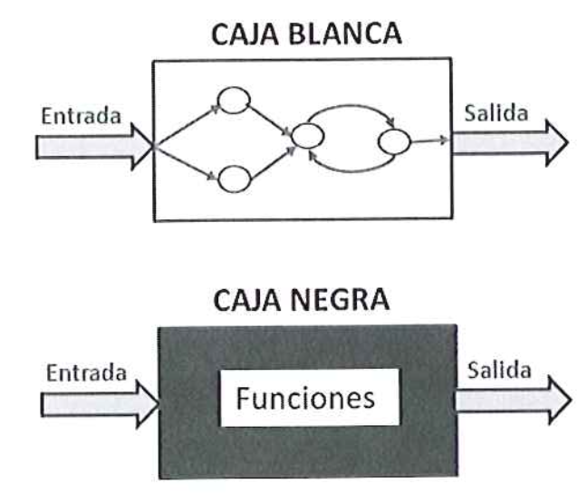

Porque son necesarias:
Las pruebas son esenciales en el desarrollo de software para garantizar su calidad y satisfacción del usuario. Deben realizarse en todas las etapas del proceso para detectar errores tempranamente y minimizar costos. Existen varios tipos de pruebas, como funcionales, de usabilidad, seguridad y navegación, cada una enfocada en aspectos específicos del software. En resumen, las pruebas son cruciales para asegurar un producto final fiable y de alta calidad.
Tipos de pruebas:
Las pruebas de caja blanca tienen como objetivo recorrer la estructura del código comprobando la ejecución de todos los posibles caminos de ejecución.
Las pruebas de caja negra, en cambio, se centran en los requisitos o resultados del sistema software.
Y dependiendo del proceso de la realizacion, las pruebas pueden ser manuales o automaticas: